Some things are taken without much thought and kept for reasons we only understand later. A restaurant matchbook can be one of them. It is free, small enough to slip into a pocket, and easy to overlook, yet somehow it follows us home and stays there long after dinner is over. I began collecting matchbooks from restaurants around New York, interested in how each restaurant translated its identity onto such a small object. What began as an interest in their design gradually became a collection of 50, and as the collection grew, I started to wonder: How can something so small hold so much meaning?
Going out to eat is about more than what arrives on the plate. It is also about where we are, who we are with, the atmosphere of the room, the conversations we have, and the objects that surround us. Restaurants extend their identities beyond food through interiors, signage, menus, merchandise, receipts, and the small things we take home. A matchbook may begin as advertising, but once it leaves the restaurant, it can become something else: a souvenir, a collectible, proof that we were somewhere, or a reminder of a particular night.
A Little Something uses 50 New York restaurant matchbooks as a starting point to explore dining culture beyond the food, from the places we want to be and the identities restaurants create to nostalgia, collecting, and memory. Eventually, the table is cleared, the check is paid, and the details of the meal begin to fade. Sometimes all that remains is a small reminder of where we were, who we were with, and how that night felt. A little something we decided to keep.
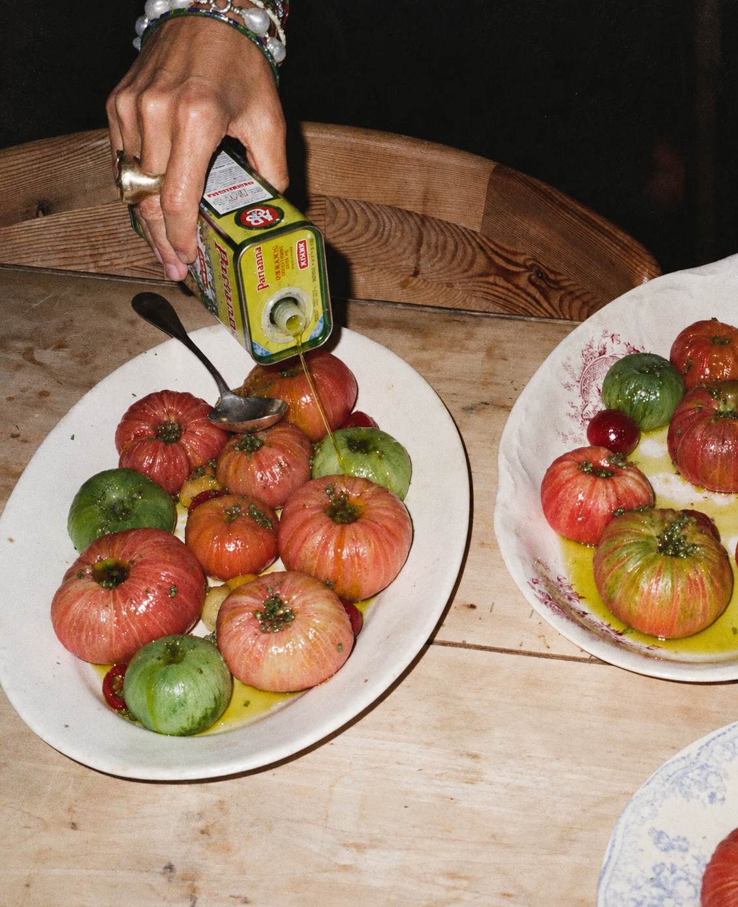
For more than a century, matchbooks have moved through restaurants almost unnoticed. They sat at bars, host stands, and entrances, waiting to be slipped into a pocket on the way out. Small, inexpensive, and useful, they offered restaurants something particularly valuable: an advertisement that customers would willingly take home. Today, the reason for taking one is less obvious. Many of us do not need the matches inside. Still, restaurant matchbooks continue to disappear into pockets, accumulate in bowls, and fill drawers and collections. Somewhere along the way, an object designed to create a flame became an object worth keeping.
Next >
The modern matchbook began as an invention of convenience.
In 1892, Philadelphia patent attorney Joshua Pusey patented a compact form of cardboard matches and later sold the patent to the Diamond Match Company. But it was not long before the small paper cover surrounding the matches revealed another possibility: advertising.
In the early twentieth century, Diamond Match salesman Henry C. Traute helped establish the matchbook as a promotional object. After learning that a New York opera company had successfully advertised a performance on illustrated matchcovers, Traute brought the idea to Pabst Brewing Company in 1902. Branded matches soon spread to other businesses, and Traute also encouraged retailers to distribute matchbooks to customers for free.
The idea was remarkably simple. Give someone something useful. Put your name on it. Let them take it with them.
Unlike an advertisement fixed to a wall or printed in a newspaper, the matchbook could travel. It could leave the restaurant in someone’s pocket, appear later on another table, and be handled repeatedly before the final match disappeared.
A restaurant did not simply advertise to someone while they were inside. Its name could follow them home.
Next >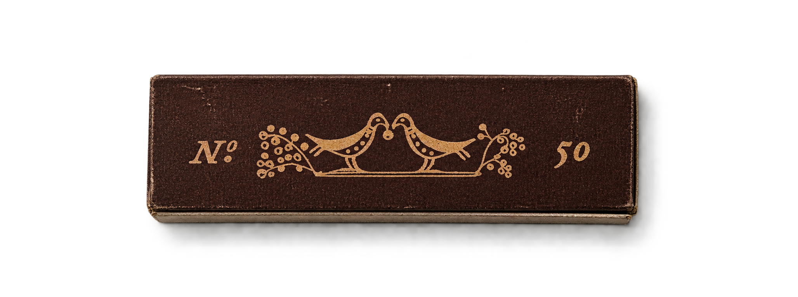
The matchbook’s scale is part of what made it effective.
A few inches of cardboard had to do several jobs at once. It contained a useful object while also carrying the restaurant’s identity. Names, addresses, telephone numbers, logos, illustrations, slogans, and typography transformed the cover into a miniature piece of graphic design.
According to a former match salesman interviewed by Eater, repeatedly reaching for the same matchbook could expose someone to the branding dozens of times. For restaurants, this made a cheap disposable object an unusually persistent form of promotion.
There is also something contradictory about this kind of advertising. Most advertisements have to compete for our attention.
The matchbook did not. We picked it up ourselves. The restaurant offered it without charge. The customer decided to take it. The advertisement became a possession.
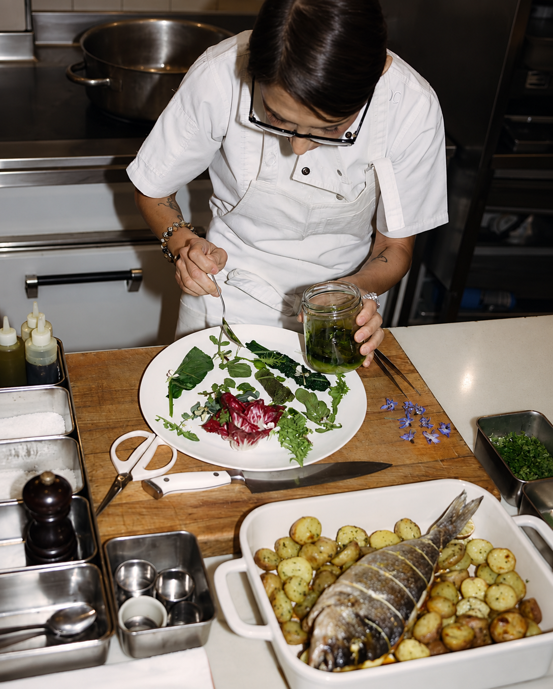
The matchbook industry reached its American heyday between roughly 1920 and World War II, when branded matches were produced by companies across the country. But as smoking rates declined and smoking restrictions expanded, the restaurant matchbook began to lose the everyday function that had made it so common. Domestic production also shrank dramatically, and for many restaurants, matches moved into the “nonessential” category of business expenses.
Some restaurants stopped producing them. Caroline Styne of the Lucques Group explained that her restaurants had once offered matchbooks as a takeaway that could promote the restaurant long after a customer left, but fewer smokers and rising operating costs eventually led them to phase the objects out.
Still, she kept her own collection at home because seeing the matchbooks continued to remind her of the restaurants they came from. The industry responded by changing what it was selling. Maryland Match Corporation stopped promoting matches primarily as smoking tools and instead presented them as an inexpensive way for restaurants to circulate their name and image.
The matchbook had not necessarily become useless. People could still light candles, stoves, or fireplaces with it. But its relationship with the restaurant had changed.
The flame was no longer the whole point.
Next >
That desire has become particularly visible in contemporary New York. Edible Manhattan connects the resurgence of restaurant matchbooks to post-COVID dining culture and a younger generation drawn to nostalgic, physical objects in increasingly digital lives.
At Bar Primi, matchbooks are placed in a bowl for customers to take. Managing partner Justin Sievers describes their appeal as something more “real and tactile” in a world where “everything is digital.” Open the matchbook and the restaurant experience continues: inside is A scula past’!, roughly translating to “The pasta is ready.”
Other restaurants make matchbooks more exclusive. Jack’s Wife Freda’s “We’re a perfect match” book is described as a “badge of triumph,” while at The Odeon and The Polo Bar, customers have to ask for one. What began as widely distributed advertising can now gain value through scarcity.
Designer Louise Fili calls matches the “perfect New York souvenir,” offering more personality than a conventional business card. The matchbook no longer needs the cigarette to justify its place at the restaurant. Its outdatedness has become part of its appeal.

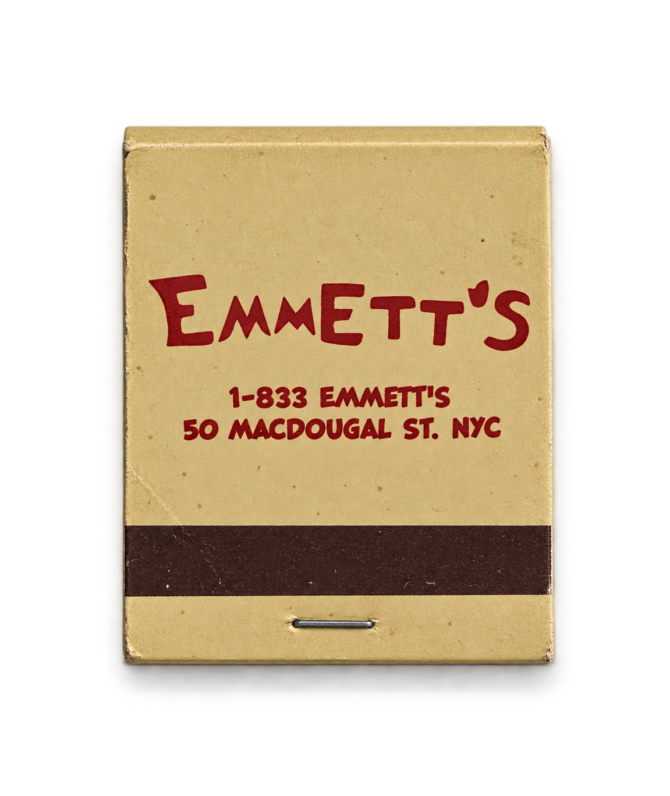
Eating is something we can do almost anywhere. We can cook at home, order delivery, eat at our desks, or pick something up on the way somewhere else. Yet we continue to make reservations, wait for tables, travel across the city, and pay considerably more to eat in restaurants.
A restaurant provides food, but dining out also gives us something less tangible: a place to spend time. We meet friends, go on dates, celebrate birthdays, conduct business, sit alone among strangers, or simply leave the routines of home for a few hours.
The table becomes a temporary social space, and everything surrounding the meal contributes to how that time feels. The lighting, music, furniture, crowd, service, menus, tableware, and even the distance between tables shape our experience before we have tasted anything. A restaurant is therefore not only preparing what we eat. It is constructing an environment in which eating happens.
Next >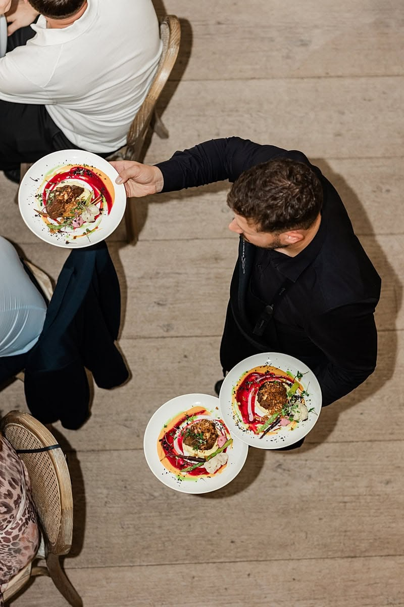
New York has thousands of places to eat, yet somehow everyone can end up trying to get into the same few restaurants.
A new opening appears on Instagram. Someone posts from a table you have been trying to book. A friend tells you they finally got a reservation. Suddenly, going somewhere for dinner becomes less about deciding what you want to eat and more about whether you can get in at all.
The Observer describes New York’s most sought-after restaurants as existing somewhere between dining destination and cultural event. Places like The Corner Store, The Polo Bar, Torrisi, Carbone, and Bungalow attract attention not only because of their food, but because of the stories, people, interiors, and reputation surrounding them. In a city with an overwhelming number of choices, being difficult to access can make a restaurant feel even more desirable.
Next >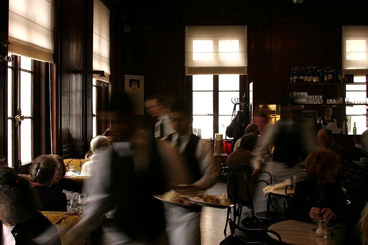
For some New York restaurants, getting a table has become its own ritual.
Resy’s guide to the city’s toughest reservations reads almost like a strategy manual. Reservations might appear exactly 14, 20, or 30 days ahead. Diners set alarms for release times, activate notifications, join waitlists, arrive before opening, or plan around the few seats reserved for walk-ins.
At Rubirosa, walk-in waits can stretch beyond two hours, while Raoul’s recommends arriving before its 5 p.m. opening for one of just eight walk-in bar seats.
The reservation is no longer just a practical step before dinner. For certain restaurants, getting the reservation becomes part of the experience itself. There is anticipation before you arrive and a small sense of achievement when you finally sit down. The harder a table is to get, the more valuable it can begin to feel.
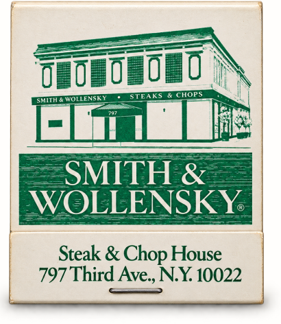
Scarcity alone cannot make a restaurant good, but it can make people more curious about it.
The Observer describes dining at New York’s “it” restaurants as something that can feel like a competitive exercise in cultural relevance. Social media intensifies that cycle. We see a particular dining room, martini, plate, or celebrity repeatedly until recognizing the restaurant becomes almost automatic. Then securing a table gives us something else to share: proof that we got in.
But hype alone does not explain why some restaurants remain desirable for years. Delmonico’s owner Dennis Turcinovic argues that hype eventually disappears, while consistency in food and hospitality is what keeps a restaurant alive. The Observer similarly argues that the strongest “it” restaurants combine good food and service with a recognizable identity and a story people want to participate in.
Next >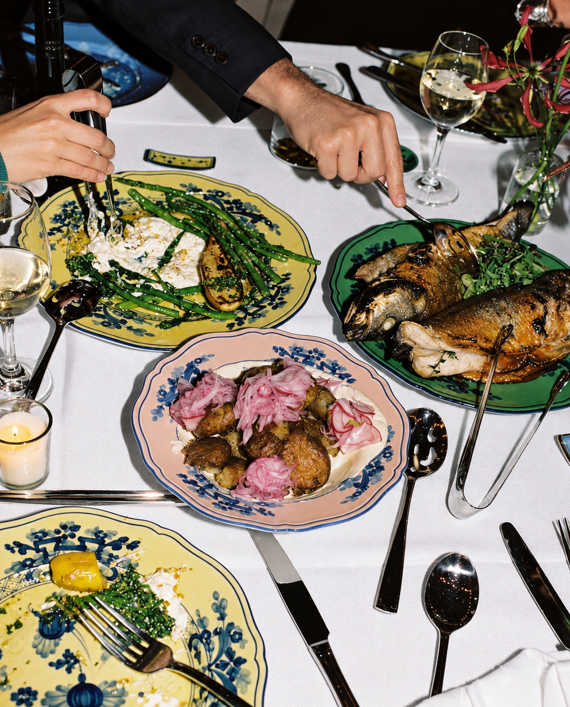
Maybe that is what makes the New York “it” restaurant so interesting. We are not simply consuming a meal. We are participating, however briefly, in something happening in the city at that particular moment.
A reservation becomes access. The restaurant becomes a destination. A photograph becomes evidence. Even recognizing the room in someone else’s Instagram story means knowing something about where people are going right now.
And then there are the physical traces.
The receipt in a coat pocket. A coaster in a bag. A photo from the bathroom mirror. A matchbook picked up before leaving.
For a restaurant everyone wants to enter, even the smallest object that leaves with you can carry another meaning: I got in. I sat here. I was there.
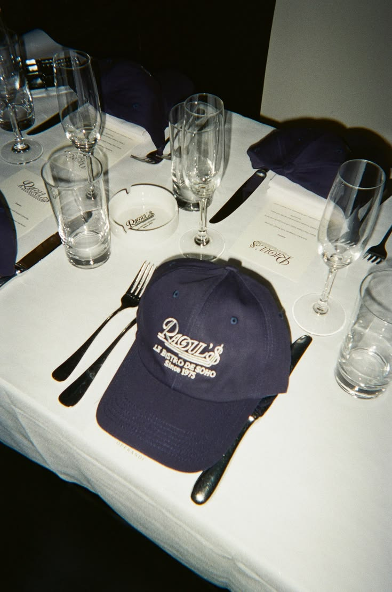
We usually try to avoid advertisements. We skip them, scroll past them, close them, or throw them away.
But sometimes we put one in our pocket.
Restaurants have long created objects designed to leave with their customers. Matchbooks, postcards, pens, and coasters carried the restaurant’s name beyond its front door. The idea was simple: give someone something useful or attractive enough to keep, and the advertisement travels with them.
Today, that idea has expanded far beyond the complimentary matchbook. Restaurants sell T-shirts, hats, tote bags, sauces, candles, ceramics, and increasingly elaborate collaborations. Some of these objects have little practical connection to eating at all.
Unlike traditional advertising, we willingly carry them.
Sometimes we even pay to do it.
Next >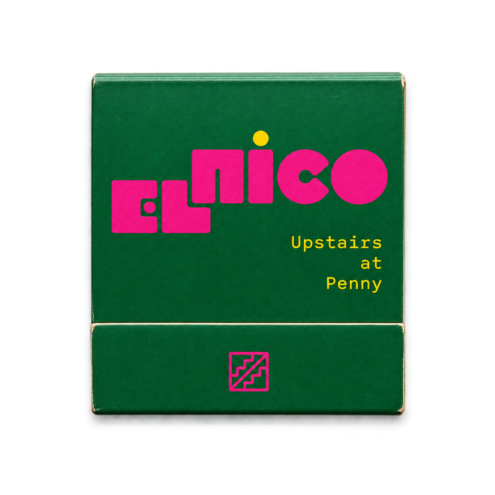
A restaurant’s identity once lived primarily inside the restaurant: on its sign, menu, napkins, uniforms, and interior.
Now it can extend almost anywhere.
Dimes became an early example of this shift in New York. What began as a restaurant expanded into Dimes Deli and Dimes Market, alongside products that carried its recognizable identity beyond the dining room. Eater described this expansion as part of a broader shift toward restaurants behaving more like lifestyle brands.
The restaurant was no longer just somewhere to eat. Its identity represented a particular aesthetic, neighborhood, community, and way of living.
This changes what we are buying into when we choose a restaurant.
We may like the food, but we can also like everything surrounding it: the typography, interiors, music, people, attitude, and visual identity. Eating there becomes one way of participating in that world.
Taking something home allows that participation to continue.
You eat at the restaurant. Then you take the restaurant with you.
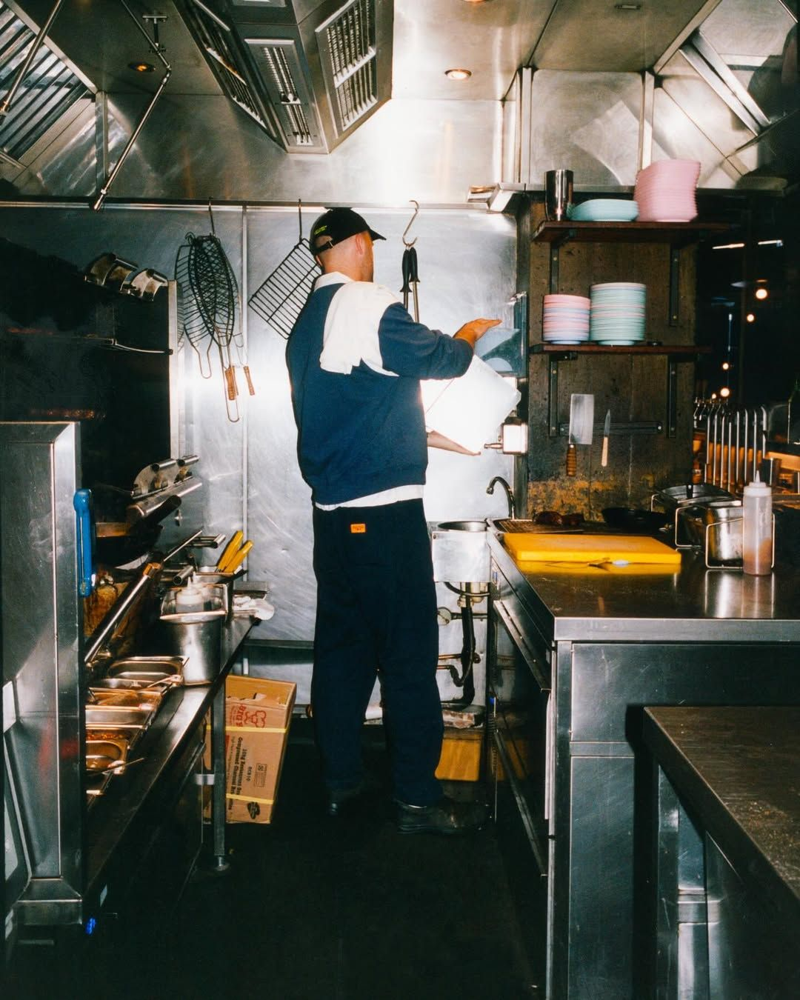
There is something strange about restaurant merchandise. Normally, companies pay to put their logos in front of us. With merchandise, we pay for the logo.
We buy a restaurant T-shirt and wear its name across the city. We carry its tote bag onto the subway. We put its sauce in our refrigerator. The customer becomes both consumer and advertisement. But it does not necessarily feel like advertising because the object can communicate something about us too.
Designer Meijun Li’s work for New York restaurants demonstrates how restaurant identity can move between spaces and objects. Her studio Overice has worked with restaurants including 886, Wen Wen and Nowon. For 886, the identity extended to Sze Daddy Chili Sauce, allowing something from the restaurant to become a branded product that could live in someone’s home.
A restaurant logo can therefore become a kind of personal signal. The restaurant uses the object to communicate its identity.
We use the same object to communicate ours.
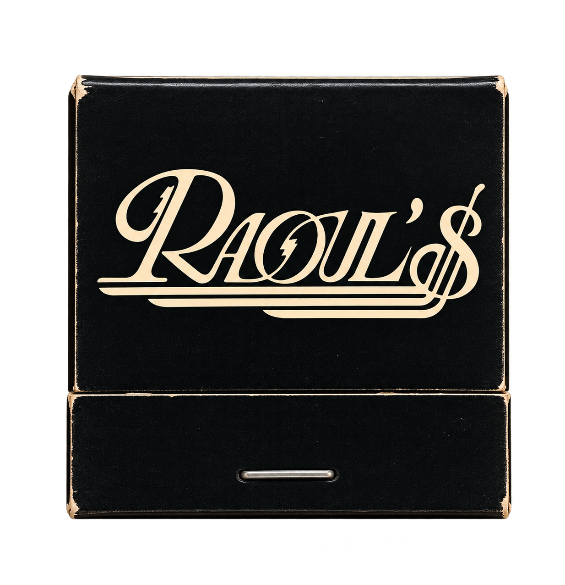
Some new restaurants do not want to look new.
They use script lettering, serif typefaces, hand-painted signs, illustrated menus, old photographs, wood, vintage glassware, and printed objects that seem as though they could have existed for decades. Even when a restaurant has only been open for a few months, its design can suggest that it already has a history.
What interests me is that these details do not need to actually be old. A menu printed yesterday can look archival. A newly commissioned sign can feel hand-made and familiar. A matchbook picked up tonight can look like something discovered in a drawer from twenty years ago.
Restaurants are not simply borrowing the appearance of the past. They are borrowing the feelings we associate with it: familiarity, permanence, warmth, and memory.
Next >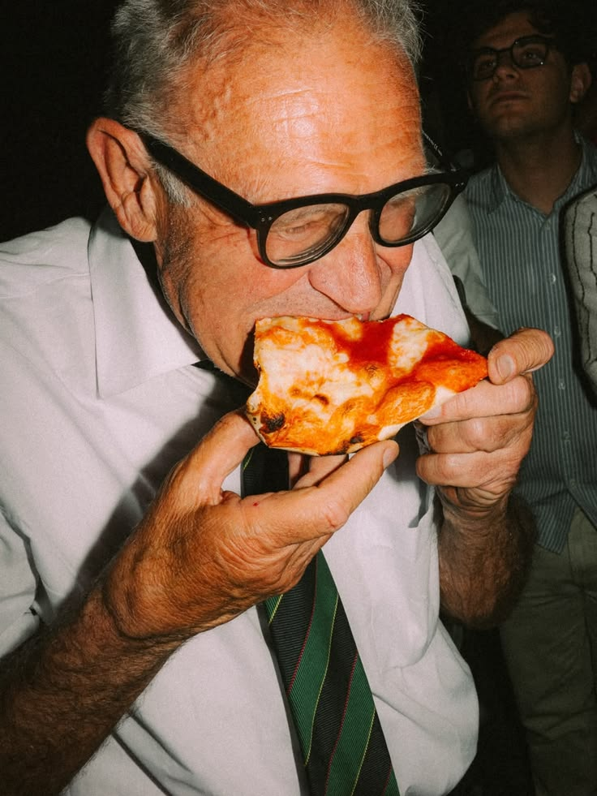
For Jupiter at Rockefeller Center, Triboro avoided simply making an Italian restaurant that “looked Italian.” Instead, its identity brings together different histories and references, including Rockefeller Center’s Art Deco surroundings, the golden Prometheus statue, Jupiter’s celestial associations, hand lettering, and twelve zodiac illustrations.
The result is difficult to place within one particular decade. BP&O describes the imagery as sitting somewhere between the antiquarian and the current. Historical references are recognizable, but they have been rearranged into something contemporary.
This is what makes nostalgic design interesting. It does not always recreate one specific past. Designers can take fragments from different periods and combine them to create something that feels familiar without belonging completely to any one time.
Old enough to feel familiar. New enough to feel desirable.
Next >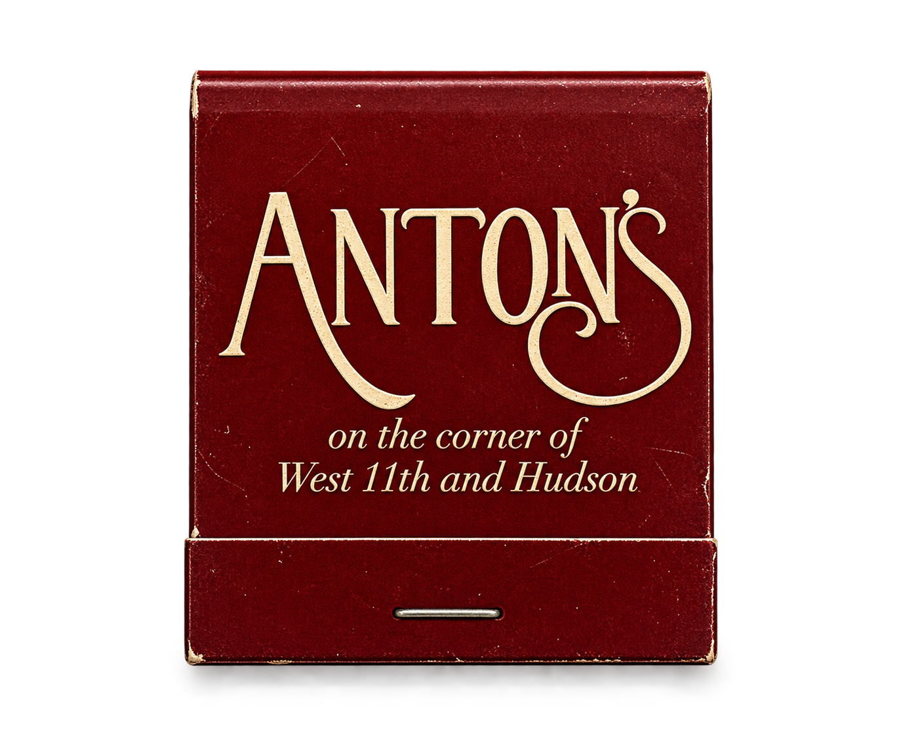
We do not actually need to remember something for it to make us nostalgic.
Baohaus created its identity through hand-painted signage, menu boards, prints, Polaroid photography, and blue-and-white graphics. It’s Nice That described the result as having the feeling of a fuzzy 1990s film. Designer Eli Rosenbloom worked informally with the founders and a third-generation sign painter, with limited money for materials.
A hand-painted letter does not look exactly like the next. A Polaroid contains grain. An illustrated menu feels different from a screen. These details suggest that something has been touched, used, and lived with.
We can recognize these signals even if we never personally experienced the period they reference. We learn what the past looks like through films, family photographs, packaging, old menus, advertisements, interiors, and other images.
Sometimes we are nostalgic for something we never actually experienced.
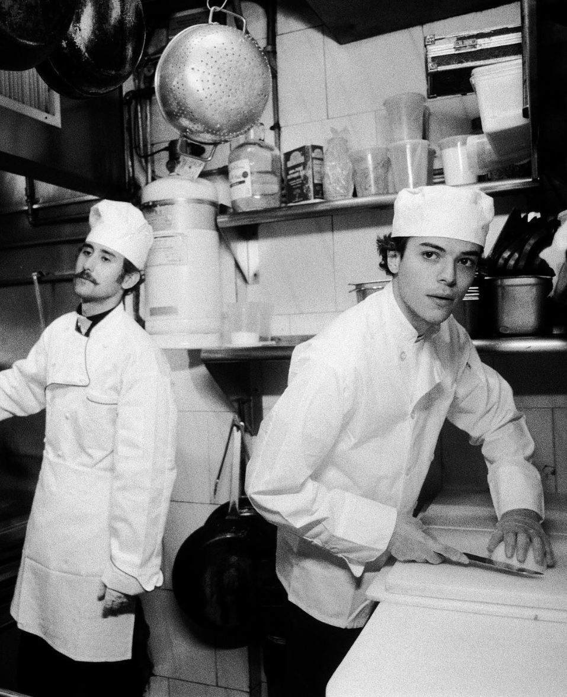
Restaurants are constantly changing. They open, close, redesign their interiors, change owners, and respond to trends. But the places we become attached to often feel like the opposite. We want them to feel established, familiar, and as though they will still be there the next time we return.
Nostalgic design can create some of that feeling immediately.
A hand-painted sign suggests human touch. Worn materials suggest use. An old-fashioned menu suggests tradition. A familiar typeface can make a restaurant we have never visited before somehow feel recognizable.
What is interesting is that all of these signs of age can be completely intentional.
Next >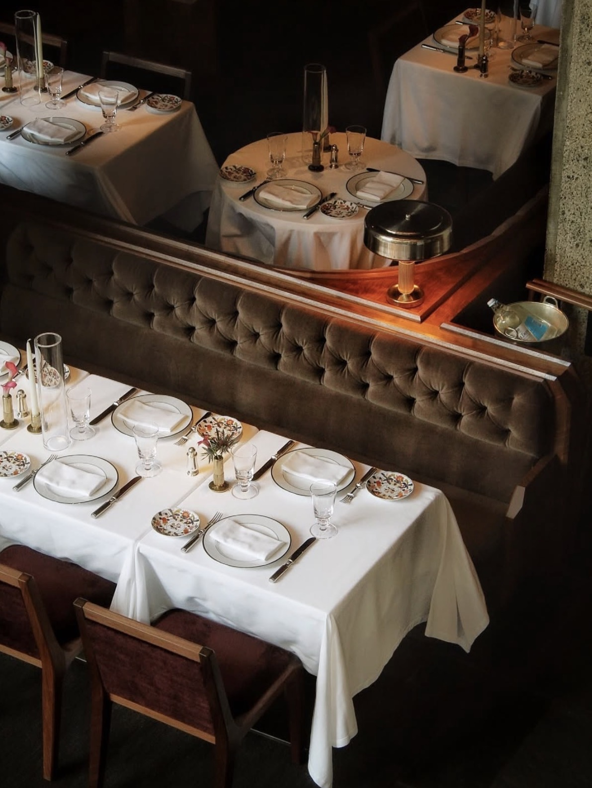
Other restaurants work with a real history rather than constructing the appearance of one.
At Marcel, Sotheby’s restaurant in New York, Roman and Williams looked to the archive of modernist architect and designer Marcel Breuer. Archival material informed the restaurant’s environment and graphic details, connecting a new dining space to an existing design legacy.
This creates an interesting distinction. One restaurant can inherit a real archive. Another can create the feeling of an archive through typography, materials, illustration, photography, and objects. Either way, design gives a new restaurant something that normally takes years to acquire: A sense of history.
The matchbook fits naturally into this world. Its original function may have faded, but its form already carries associations with an earlier era of restaurants and nightlife. Even one manufactured today can immediately feel nostalgic.
At Jupiter, Triboro extended the restaurant’s zodiac illustrations onto matchbooks, turning a contemporary identity into an object that already feels collectible.
A matchbook can be printed this month, picked up tonight, and somehow already look like a memory.
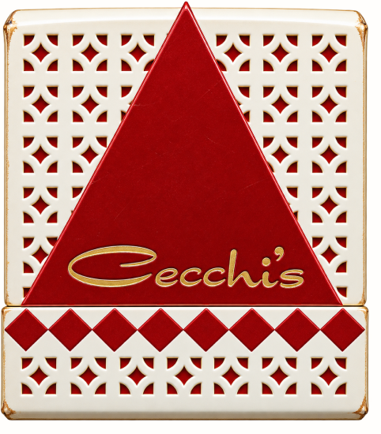
A receipt from a dinner. A concert ticket. A hotel key card. A boarding pass. A postcard. A matchbook.
Individually, these objects are ordinary and often worth almost nothing. But once they become connected to a particular place, person, or experience, throwing them away can suddenly feel difficult.
Research on possessions and memory suggests that meaningful objects can help us preserve, embody, display, and recall personal memories.
In other words, we do not always keep an object because the object itself is important. Sometimes we keep it because of what it helps us remember. The object is ordinary, but the memory isn’t.
Next >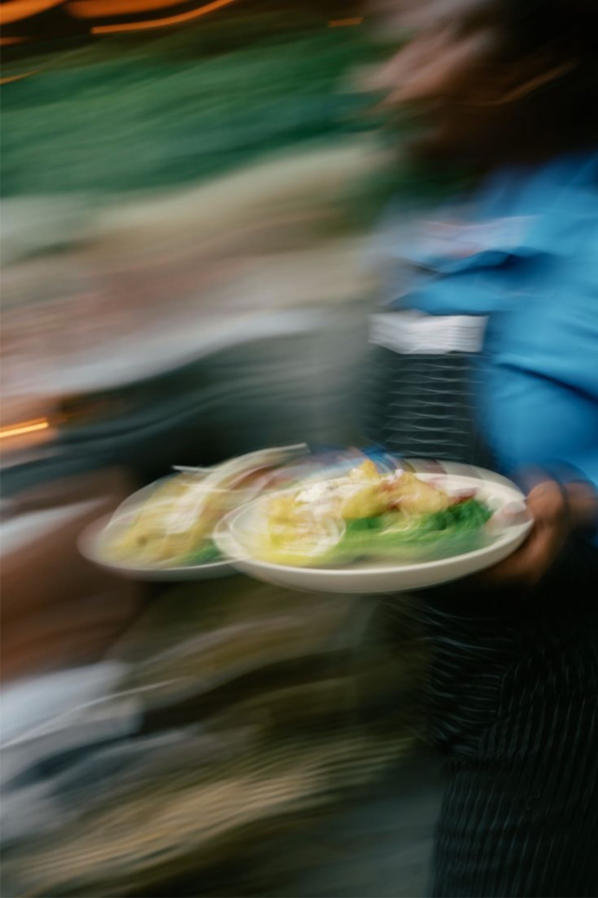
This is the strange thing about restaurant memories.
I might forget exactly what I ate, but remember the corner table.
I might remember who sat across from me.
The music.
The conversation.
What happened before dinner.
Where we went afterward.
And sometimes, I remember because there is still something physical left from that night.
A matchbook does not contain the memory itself. It acts more like a trigger. Research on possessions and memories shows that objects can support recollection by maintaining a connection between something physical in the present and an experience from the past.
The meal disappeared that night.
The object didn’t.
Next >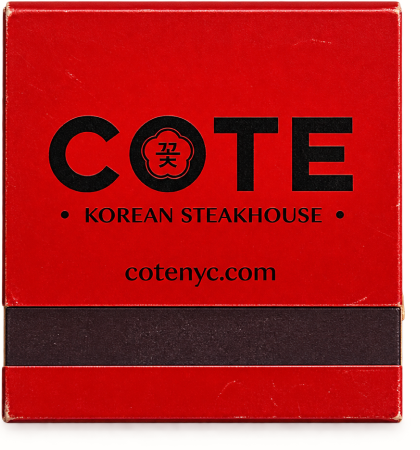
Souvenirs are interesting because their meaning often begins after the experience is over.
Research into souvenirs describes how seemingly ordinary objects can take on significance once they enter everyday life. A 2024 study focused on something particularly mundane: fridge magnets. Researchers found that because magnets remain visible and embedded in everyday routines at home, they repeatedly trigger memories and emotional responses long after a trip has ended.
A matchbook can work in much the same way.
It leaves the restaurant and enters a completely different environment. It sits on a desk, in a bowl, on a bookshelf, or at the bottom of a drawer. Then, months later, seeing it can unexpectedly return us to a particular night.
Where did I get this?
Who was I with?
Why were we there?
The object becomes a shortcut back to an experience.
A souvenir does not have to be expensive to become valuable.
Research on souvenirs has examined them as objects whose meanings extend beyond their monetary or practical value. They move from the place where they were acquired into everyday life, where their relationship to memory can continue to develop. Research on fridge magnets, for example, found that even these seemingly banal objects can continue generating and protecting memories long after the original experience.
That contradiction is what makes my collection interesting to me.
The restaurant gave me a disposable object.
I decided it was worth keeping.
One became two. Two became ten. Eventually, there were fifty. At that point, I was no longer simply taking matchbooks from restaurants. I was building an archive of where I had been.
A Little Something to add to your cart!